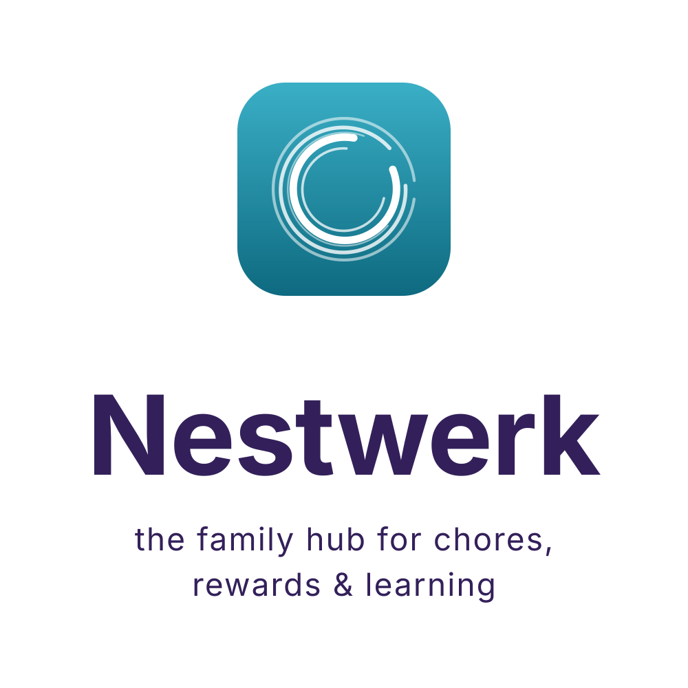
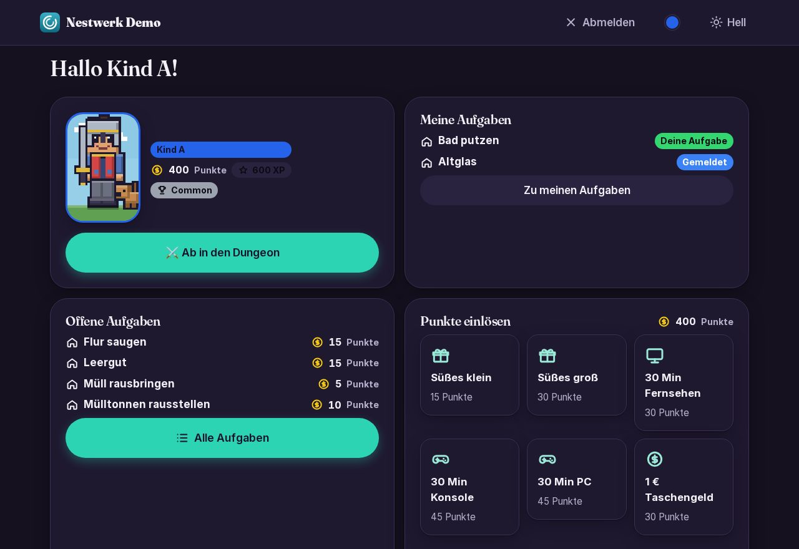
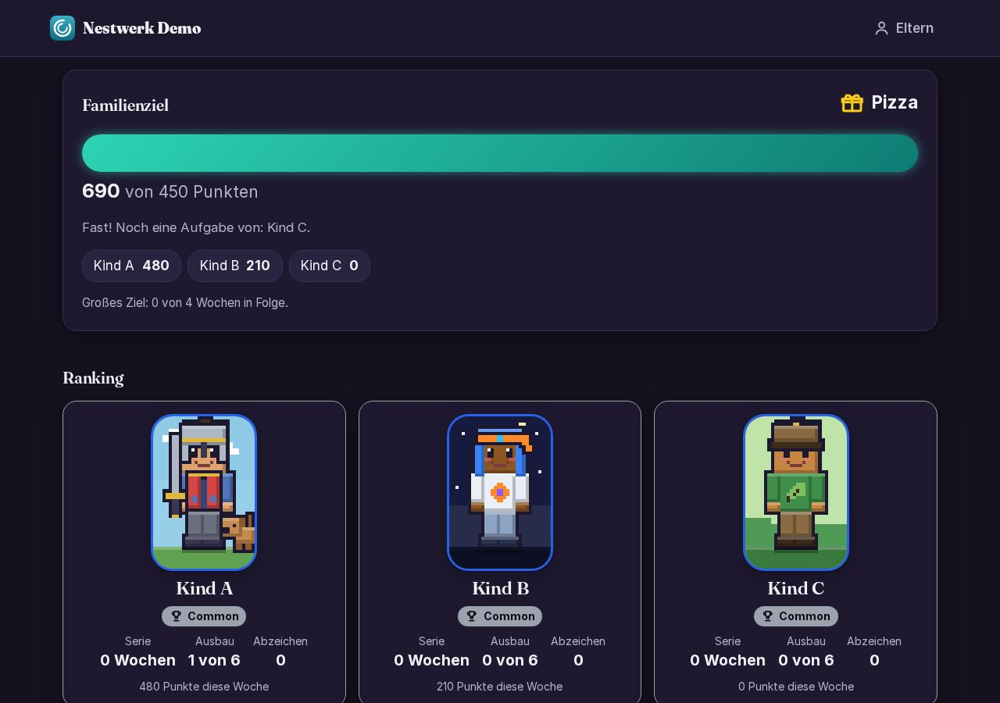
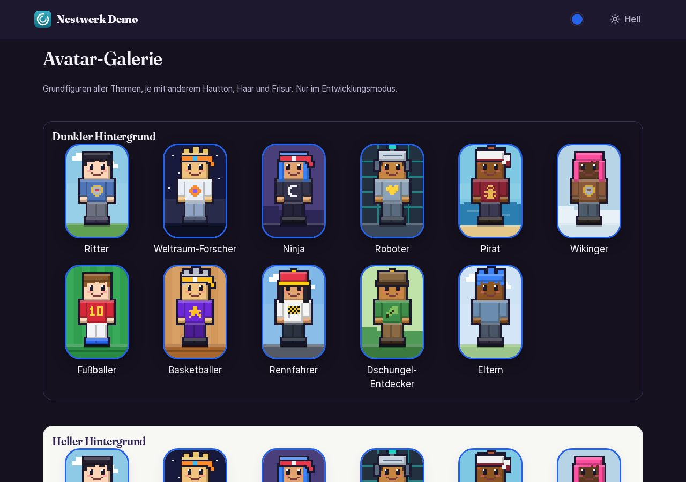
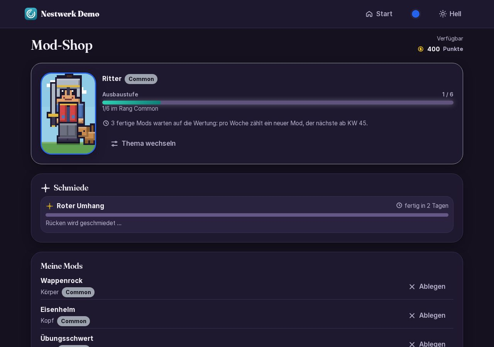
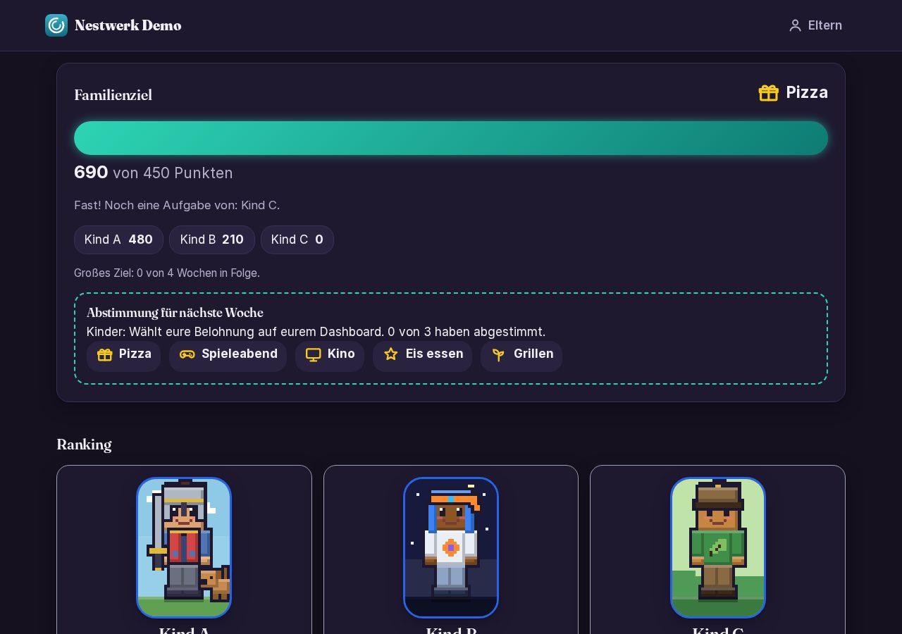
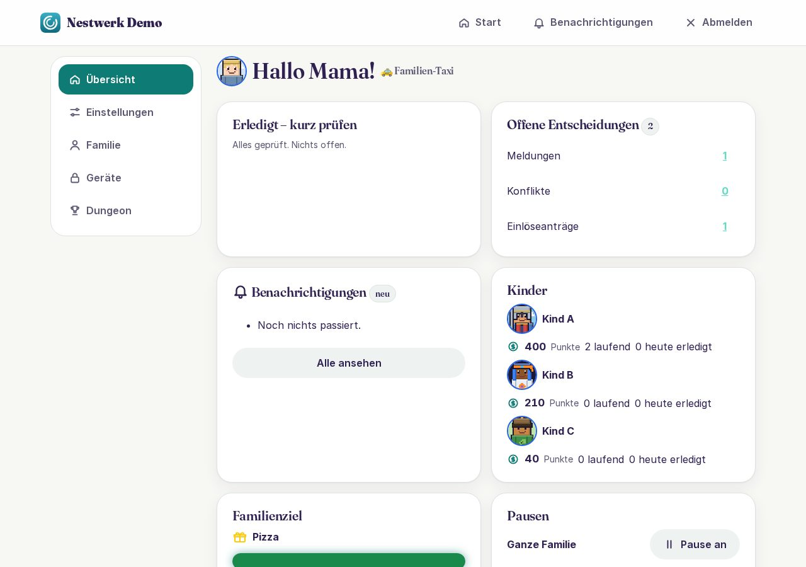

Aufgaben, Belohnungen und Lernen für die ganze Familie
the family hub for chores, rewards & learning
Nestwerk ist ein freies Familien-Dashboard, das ihr auf dem eigenen Server betreibt.
Was ist Nestwerk?
Nestwerk macht Haushalt und Mithelfen zum gemeinsamen Spiel. Kinder helfen freiwillig, sammeln dafür Punkte und tauschen sie gegen Belohnungen, die die Familie selbst festlegt.
Jedes Kind baut sich einen eigenen Block-Avatar, steigt im Rang auf und sammelt Abzeichen. Als Familie arbeitet ihr gemeinsam auf ein Ziel hin.
Eltern behalten mit einem ruhigen Dashboard die Übersicht und entscheiden, was zählt. Alles läuft lokal bei euch zu Hause, ohne Cloud und ohne Konto bei Dritten.
Funktionen
Aufgaben & Freigabe
Aufgaben anlegen, wiederholen und abhaken. Nachweise und Freigabe durch die Eltern halten es fair.
Punkte & Belohnungen
Freiwillige Hilfe zählt Punkte. Dafür gibt es Belohnungen aus einem Katalog, den ihr selbst festlegt.
Avatare & Mods
Jedes Kind baut seine Block-Figur aus Mods, die es sich im Mod-Shop erarbeitet.
Ränge, Serien & Abzeichen
Ränge von Common bis God Mode, Serien über Tage und Wochen und Abzeichen zum Sammeln.
Familienziel & Held der Woche
Alle zusammen auf ein Ziel hin, die Kinder stimmen ab. Der Held der Woche wird gefeiert.
Sondertag
Wer seine Mods komplett ausgebaut hat, verdient sich einen eigenen Sondertag.
Ruhmeshalle
Besondere Momente und Rekorde der Familie bleiben dauerhaft sichtbar.
Eltern-Dashboard
Offene Entscheidungen, Kinder, Sondertage und Einstellungen auf einen Blick.
Datenschutz & Selbst-gehostet
Läuft auf eurem eigenen Server. Keine Cloud, kein Tracking, keine Werbung.
Modular erweiterbar
Lernen und Forschen sind als nächste Module geplant. Neue Bausteine fügen sich in das gleiche System ein.
Screenshots
Kinder-Ansichten sind dunkel und verspielt, die Eltern-Ansicht ist hell und ruhig. Ein Klick öffnet das Bild groß.












Datenschutz
- Alle Daten bleiben auf eurem Server.
- Keine Werbung, kein Tracking, keine externen Dienste, auch keine fremden Schriften oder CDNs.
- Benachrichtigungen per eigenem Web-Push und eigenem Mailserver.
- Kinder haben nur Benutzernamen und PIN, keine E-Mail-Adresse.
Technik
Nestwerk basiert auf Django und läuft in Docker. Als Progressive Web App lässt es sich auf dem Handy und dem Flur-Tablet wie eine App installieren. Die Oberfläche kommt ohne externe Ressourcen aus.
- Django
- Docker
- PWA & Web-Push
- SQLite
- Selbst gehostet
Lizenz
Nestwerk steht unter der GNU AGPL-3.0. Der Quellcode ist offen.